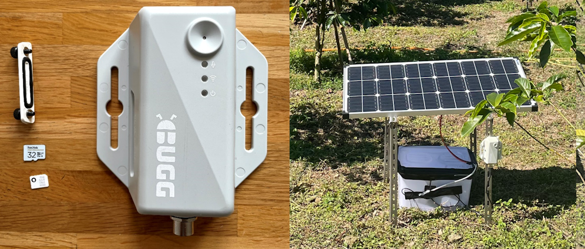

Quick start¶

Equipment¶
First, make sure you have all the required equipment:
- Bugg device and power cable
- MicroSD card
- Nano SIM with mobile internet
- Power source (5-36V DC, e.g., from mains or renewables)
MicroSD cards, nano SIMs, and power sources must be sourced independently (i.e., are not provided with Bugg devices).
Deployment¶
Then, set up and deploy a device with the following steps:
- Set up a microSD card with your Bugg configuration
- Put the SD card and a SIM into the device
- Mount Bugg and connect it to a power source
- Wait for the Bugg to boot and check the status lights
- Check your server for real-time audio data
To run a Bugg fully offline (e.g., where there is no mobile coverage), simply leave the nano SIM slot empty and audio will be recorded locally to the micro SD card.